Gwarancja zadowolenia
Nasze usługi to Twoja satysfakcja.
Poprawa szczelności
Więcej ciepła, mniej przeciągów.
Montaż
Precyzja, trwałość, pełna wygoda.
zaufaj najlepszym
Okna
Profesjonalny montaż, konserwacja oraz poprawa szczelności okien to nasza specjalność. Zapewniamy precyzyjne wykonanie usług, dbając o trwałość i komfort użytkowania. Dzięki odpowiedniej regulacji i konserwacji eliminujemy nieszczelności, poprawiając izolację cieplną oraz akustyczną Twojego domu.
Nasze rozwiązania są dopasowane do potrzeb klientów, niezależnie od rodzaju okien. Pracujemy z najwyższą starannością, korzystając z nowoczesnych narzędzi i sprawdzonych technik, aby zapewnić pełną funkcjonalność stolarki okiennej przez lata.
zobacz galerię...Drzwi
Specjalizujemy się w montażu, konserwacji oraz poprawie funkcjonalności drzwi. Oferujemy kompleksowe usługi, które zapewniają nie tylko estetyczny wygląd, ale także niezawodność i bezpieczeństwo. Dzięki precyzyjnej regulacji oraz odpowiedniej konserwacji, nasze drzwi działają płynnie, eliminując wszelkie problemy związane z ich użytkowaniem.
Nasza oferta obejmuje także poprawę szczelności drzwi, co znacząco wpływa na komfort termiczny i akustyczny w pomieszczeniach. Korzystamy z nowoczesnych technologii i sprawdzonych materiałów, by każda naprawa i instalacja była solidna i trwała przez długi czas.
zobacz galerię...Narzędzia
Nasza firma korzysta z nowoczesnych narzędzi i technologii, które zapewniają precyzyjność oraz wysoką jakość usług. Stosujemy sprzęt od renomowanych producentów, który umożliwia szybkie i skuteczne przeprowadzanie montażu, konserwacji oraz napraw okien i drzwi. Dzięki temu każda realizacja jest dokładna, bezpieczna i trwała.
Inwestujemy w innowacyjne narzędzia, które pozwalają nam rozwiązywać nawet najbardziej skomplikowane problemy, zachowując najwyższe standardy wykonania. Nasze urządzenia są regularnie serwisowane, by zapewniały niezawodność w każdej sytuacji.
zobacz galerię...co oferujemy
Naprawa okien i drzwi
Masz problem z zamknięciem lub otwarciem okna? Uszkodzone okucia? Poradzimy sobie z każdą awarią! Dzięki współpracy z wiodącymi producentami okien w regionie szybko zapewniamy niezbędne materiały do naprawy.
Sezonowy przegląd okien i drzwi
Oferujemy sezonowe przeglądy okien, które obejmują kontrolę i konserwację okuć oraz regulację. Regularna pielęgnacja gwarantuje wieloletnie, sprawne i bezpieczne użytkowanie stolarki okiennej
Wymiana szyb
Zbita lub nieszczelna szyba? Zapewniamy kompleksową wymianę szyb.
 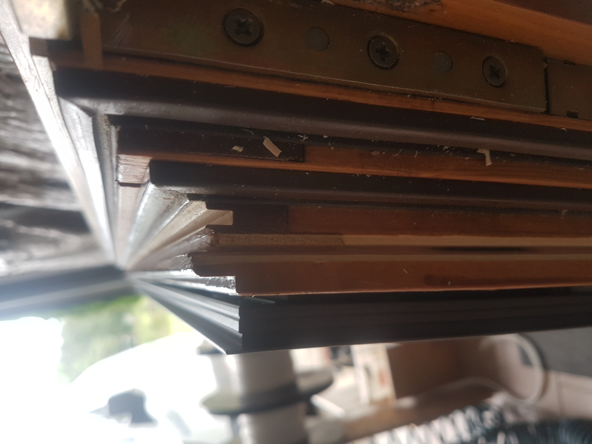
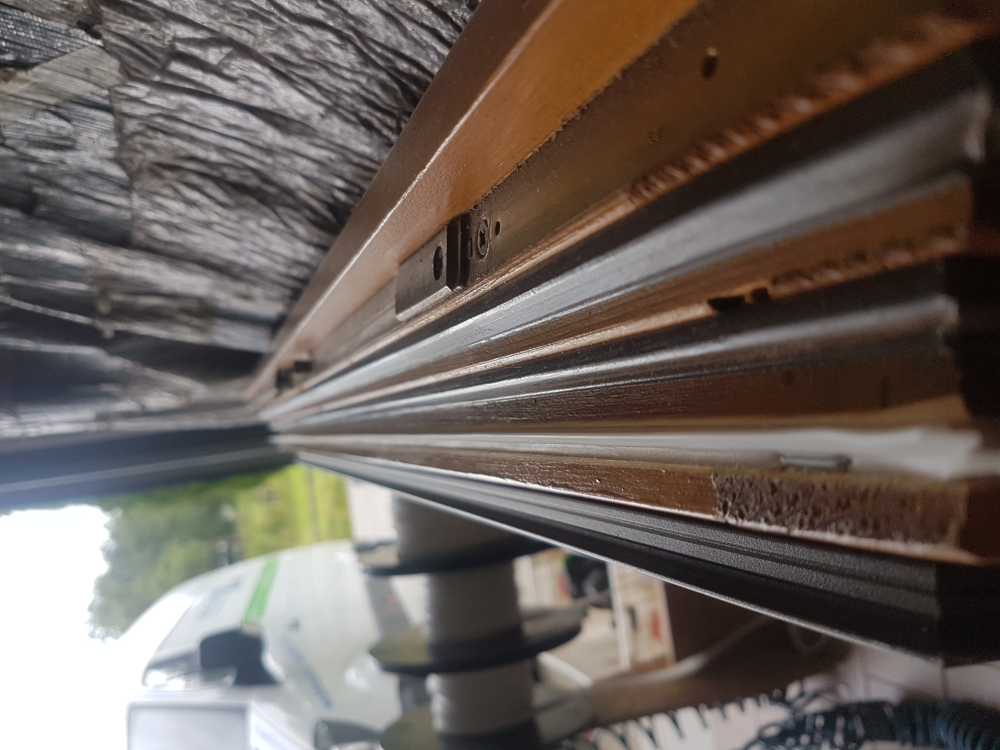
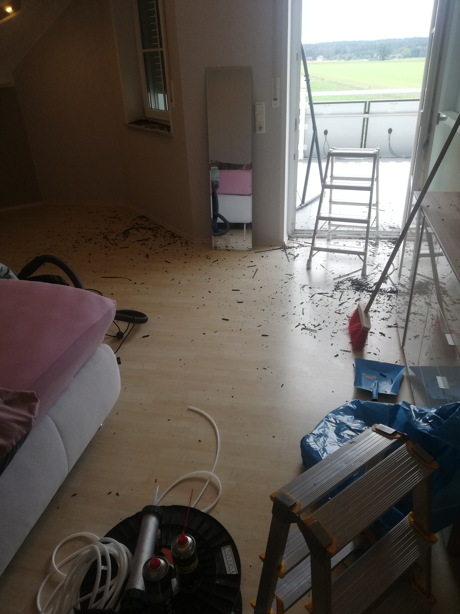
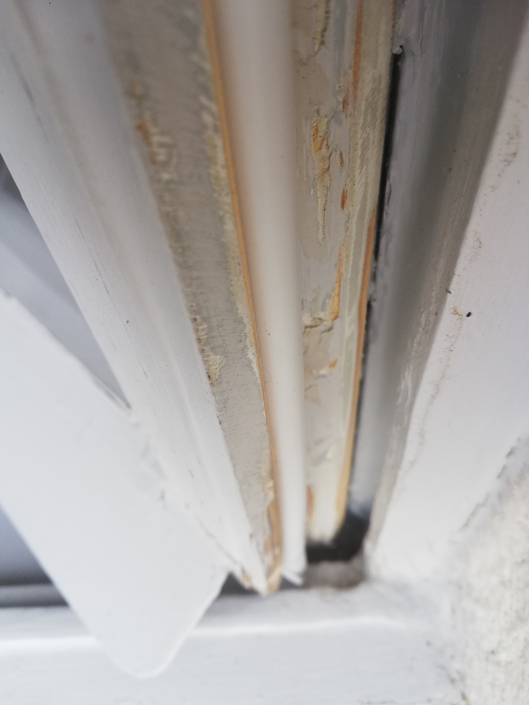
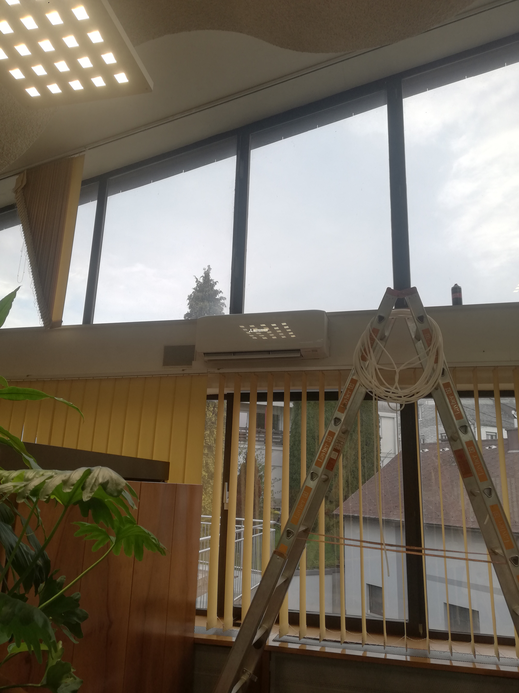
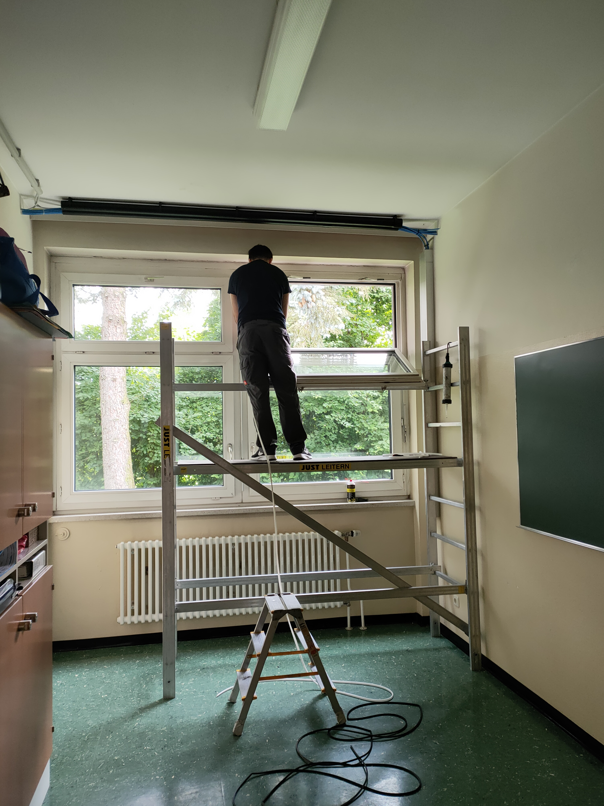
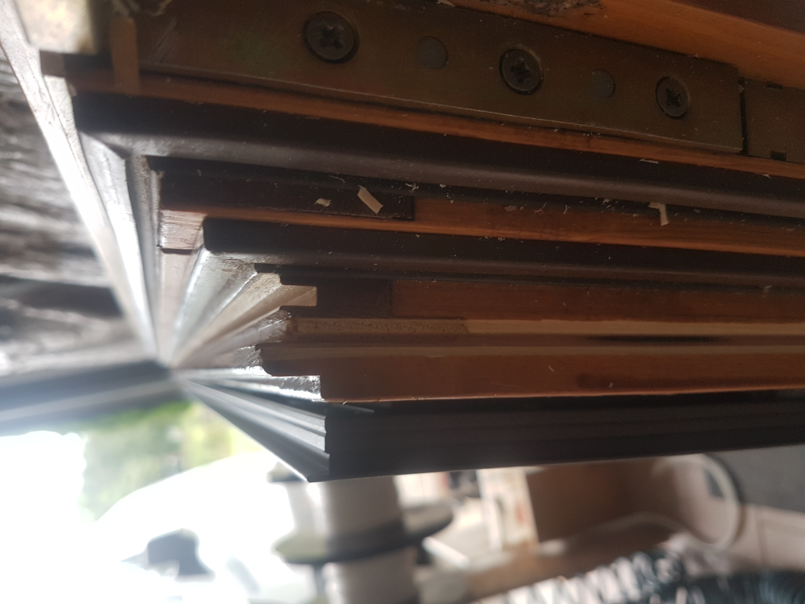
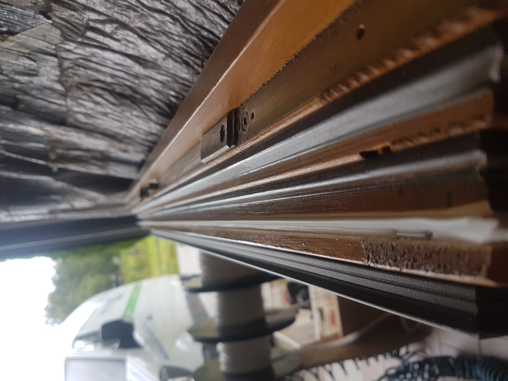
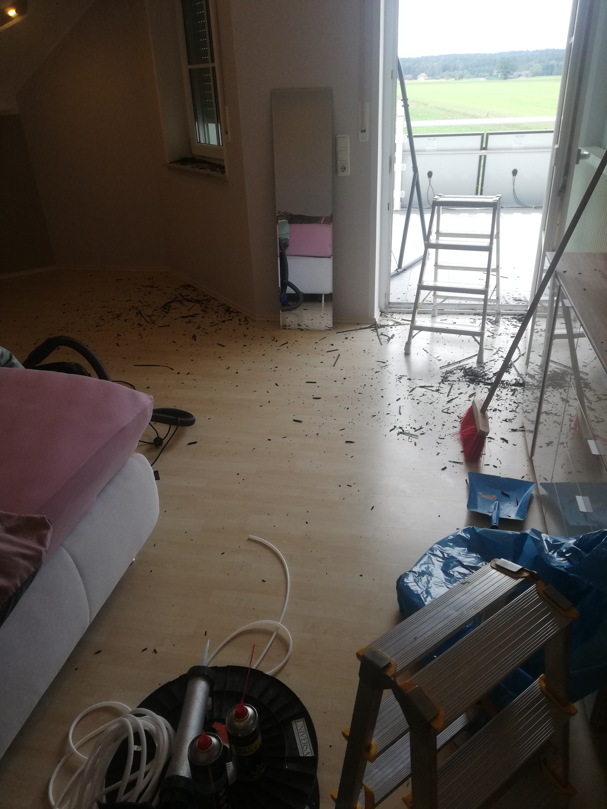
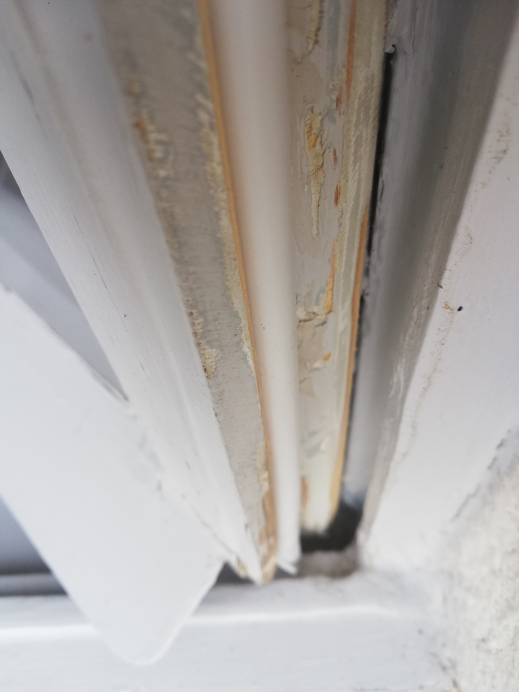
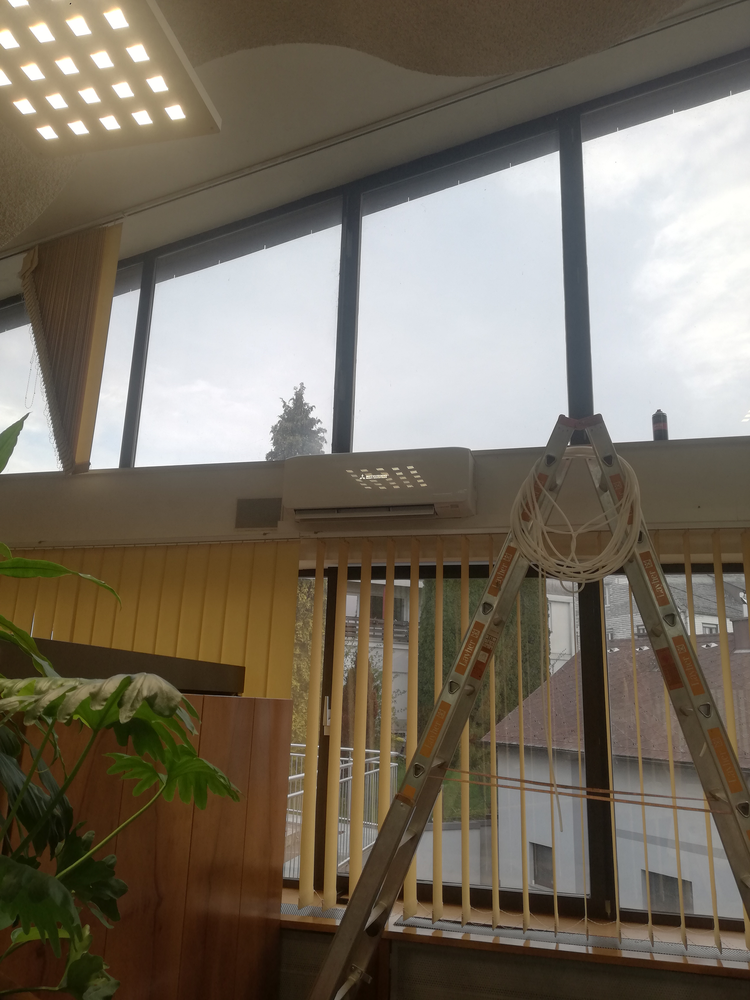
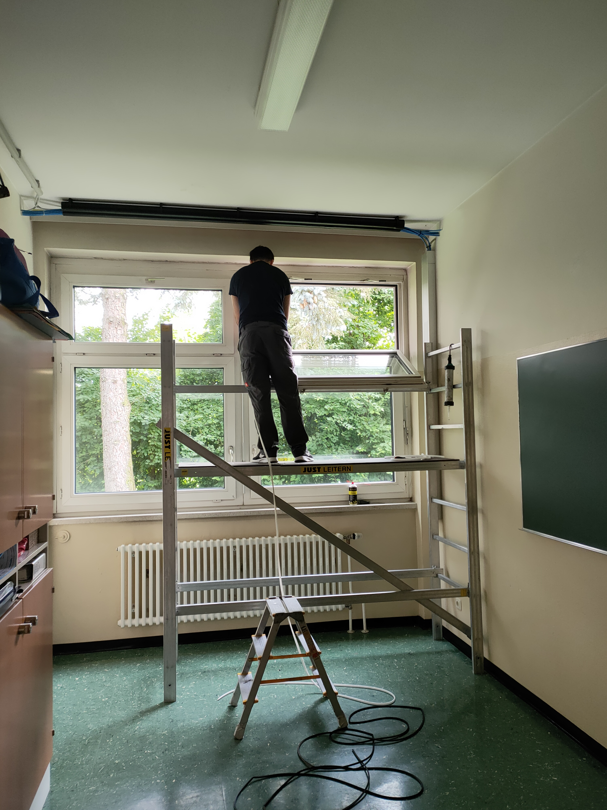
kontakt z nami
Długa 56, 33-170 Tuchów
503 599 527 Szczepan
518 704 150 Szymon
787 741 142 Piotr
serwisokien.szczepanpyrcz@gmail.com